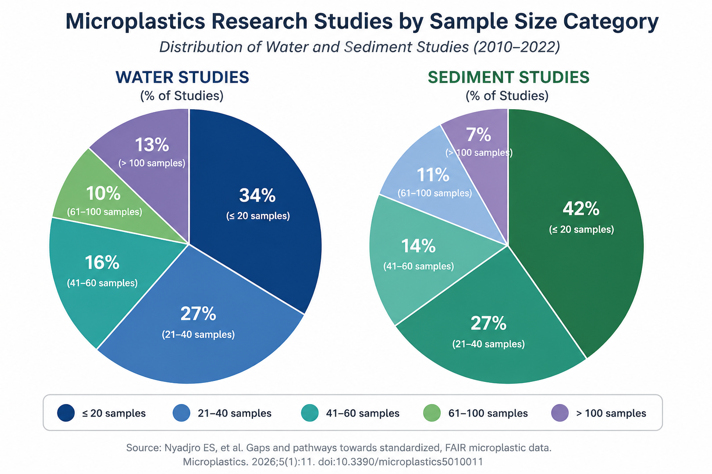

Nyadjro et al. 2026 supplement: interactive reference map of mapped literature references from the systematic review data extraction.
Educational/reference map only. Studies use different methods, units, size cutoffs, matrices, and years. Approximate centroid points are used where exact coordinates were unavailable.

This interactive map is derived from the supplemental dataset accompanying:
Nyadjro ES, et al. Gaps and Pathways Towards Standardized, FAIR Microplastic Data Harmonization: A Systematic Review. Microplastics. 2026;5(1):11. DOI: 10.3390/microplastics5010011
Published microplastics studies have generated valuable scientific knowledge; however, many studies represent individual sampling campaigns conducted at a single location and timepoint. Longitudinal monitoring datasets remain relatively limited, and substantial variation exists in sampling methods, analytical approaches, reporting units, and metadata collection.
The challenge facing the field is increasingly one of environmental monitoring and data harmonization rather than detection alone. Future monitoring efforts may benefit from standardized metadata collection, repeat measurements, broader geographic coverage, and scalable approaches capable of supporting larger numbers of observations over time.
For additional discussion of monitoring scalability, longitudinal surveillance, policy implications, and characteristics that may be required for future microplastic and nanoplastic monitoring systems, see:
Chu MB.
From Policy Prioritization Goals to Scalable Monitoring: Characteristics Needed for Effective Microplastic and Nanoplastic Detection Systems.
Zenodo. 2026.
https://doi.org/10.5281/zenodo.20586503
Educational and reference use only. Study locations are approximate where exact coordinates were unavailable and should not be interpreted as a current global contamination map.
Read Larger Summary